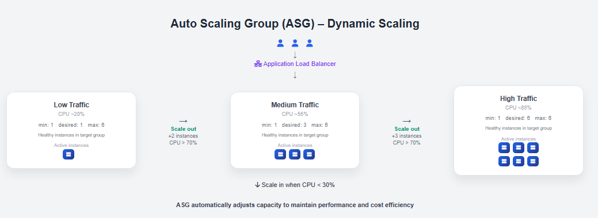
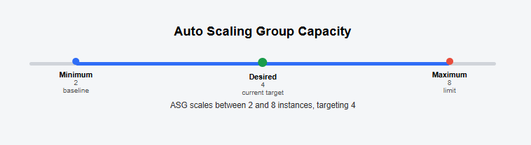
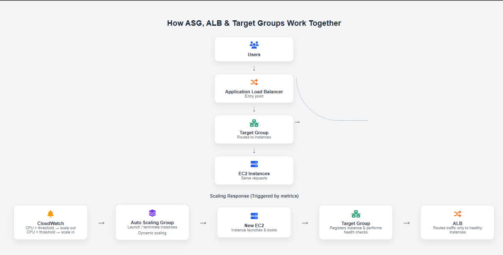

Path-based routing solves the direction problem — getting requests to the right service.
But what happens when the products page goes viral? A single EC2 instance can only handle so
many requests before it buckles. This is where Auto Scaling Groups come in.
Think of an ASG like a staffing agency for your EC2 instances. You tell the agency: "I need at
least 2 servers, never more than 10, and when things get busy, hire more." The agency (ASG)
watches traffic, automatically spins up new instances when needed, and terminates extras when
things quiet down — all without you lifting a finger.

Figure 5: Auto Scaling Group dynamically adjusts the number of
EC2 instances based on demand
Why Auto Scaling Matters
Without Auto Scaling, you have two bad choices:
- Under-provision: Keep just enough servers for average traffic. When spikes
hit, the application crashes.
- Over-provision: Keep enough servers for peak traffic, all the time. 90% of
the time you're paying for idle capacity.
Auto Scaling gives you the best of both worlds: you pay
only for what you use, and you always have enough capacity to handle current demand.
ASG Key Components
Launch Template
Before you can create an Auto Scaling Group, AWS needs to know what kind of instance to create
when it scales out. This blueprint is called a Launch Template.
A Launch Template defines the AMI,
instance type, key pair, security groups, user data, and any other configuration needed to
launch a new EC2 instance.
Think of a Launch Template like a cookie cutter. The cookie cutter (template) stays the same;
every cookie (EC2 instance) it produces is identical. When ASG needs a new instance, it uses the
launch template to stamp one out automatically.
💡 Launch Templates replaced the older "Launch Configurations." AWS recommends always using
Launch Templates because they support versioning, mixed instance types, and Spot Instance
integration.
📚 Source: AWS Auto Scaling Launch Templates Docs
Capacity Settings
Every ASG has three critical capacity numbers:
- Minimum capacity — the ASG will never scale below
this number of instances (floor)
- Maximum capacity — the ASG will never scale above
this number of instances (ceiling)
- Desired capacity — the number of instances ASG
tries to maintain right now
The desired capacity is the current
target. ASG constantly works to match actual running instances to the desired count —
launching instances if below, terminating if above.

Figure 6: ASG capacity settings — minimum, desired, and maximum
define the scaling window
Scaling Policies
How does the ASG know when to scale? Through scaling policies tied to
CloudWatch alarms.
Target Tracking Scaling (Recommended) — the simplest and most commonly used
policy. You set a target metric value (e.g., keep average CPU at 50%), and ASG automatically adjusts instance count to
maintain it. Think of it like a thermostat.
Step Scaling — you define specific steps: "If CPU is 60-70%, add 1 instance. If
CPU is 70-90%, add 2 instances. If CPU > 90%, add 4 instances." More granular control but
requires more configuration.
Scheduled Scaling — scale based on a time schedule. Useful when you know traffic
patterns in advance (e.g., scale up every weekday at 9am, scale down at 7pm).
Predictive Scaling — uses machine learning to analyze historical patterns and
proactively scale before demand hits. Best for workloads with consistent, recurring patterns.
⚡ Exam tip: Target Tracking is the
default recommendation for most workloads. It is simpler to configure and responds
faster than step scaling for gradual load changes.
ASG and Load Balancer Integration
Here is where everything ties together. When you attach an ASG to an ALB target group, something
powerful happens automatically:
- When ASG launches a new instance, it automatically registers the instance
with the target group
- The ALB immediately begins sending traffic to the new instance (once health checks pass)
- When ASG terminates an instance, it automatically deregisters it from the
target group before termination
- The ALB stops sending traffic to that instance gracefully
This integration means traffic is never sent to an instance
that isn't ready, and no traffic is lost when an instance is terminated — the process is
completely seamless.

Figure 7: ASG automatically registers and deregisters instances
with the ALB target group during scaling events
Per-Service Scaling: The Real Power
Going back to our microservices example — one of the most powerful things about combining ALB
path-based routing with ASG is per-service scaling.
Imagine Black Friday: the products and cart services are under enormous load, but the orders
service is relatively quiet. With per-service ASGs, you can scale the Products ASG from 2 to 20
instances while the Orders ASG stays at 2. You're paying only for what each service actually
needs.
💡 This is why microservices + ALB + ASG is the standard architecture pattern at companies
like Amazon, Netflix, and Uber. Each service scales independently based on its own traffic
patterns.
Scale-In Protection and Warm-Up Periods
Instance Warm-Up Period — when a new EC2 instance starts, it needs time to
initialize before it's ready to serve traffic. The warm-up period tells ASG to wait before
counting the new instance's metrics in scaling decisions, preventing it from triggering another
scale-out before the first new instance is even ready.
Scale-In Protection — you can mark specific instances as protected from scale-in
(termination). Useful for instances running long-running jobs you don't want interrupted.
During a scale-in event, ASG uses a termination
policy (default: oldest launch configuration) to decide which instance to
remove first.